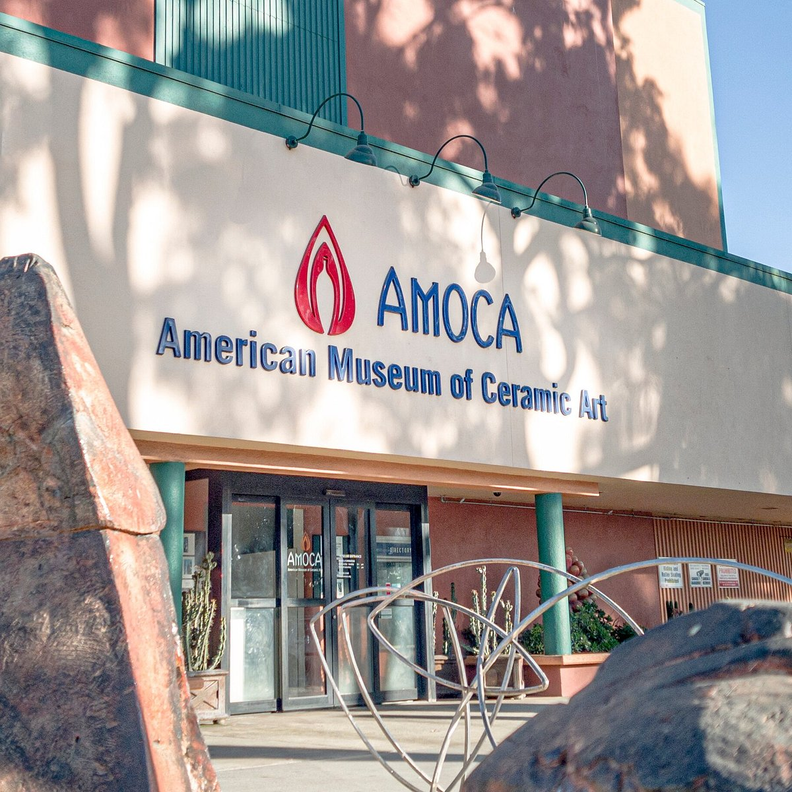

Explore Ceramic Art
Ceramic art can be discovered in museums, galleries, pottery studios, and local art shops. These places allow visitors to appreciate finished pieces, learn about ceramic traditions, and discover the creativity involved in working with clay. Explore the resources below to begin your own ceramic art journey.

American Museum of Ceramic Art
The American Museum of Ceramic Art, known as AMOCA, is located in Pomona, California. The museum focuses on ceramic art and offers visitors opportunities to explore pottery, ceramic exhibitions, and the artistic possibilities of clay.
Visit the museum's official website for current exhibitions, visitor information, and educational opportunities.
Where to Discover Ceramic Art
Ceramic art resources serve different purposes. Some focus on viewing finished artwork, while others provide opportunities to purchase handmade pieces or learn pottery techniques.
Museums and Galleries
Museums and galleries display ceramic artwork and demonstrate how artists use form, texture, color, and glaze. Exhibitions can provide inspiration for your own creative projects.
Pottery Studios
Pottery studios may offer classes, demonstrations, and hands-on experiences. They can be a good starting point for people interested in learning to shape, cast, glaze, or fire clay.
Art Shops and Craft Markets
Art shops and craft markets allow visitors to discover handmade ceramic pieces created by individual artists. These spaces can also help visitors learn about different styles and functional pottery designs.
Compare Ceramic Art Resources
Use this overview to decide which type of resource best matches your interests.
| Resource | What You Can Find | Best For |
|---|---|---|
| Museums | Exhibitions and ceramic collections | Learning about ceramic art |
| Pottery Studios | Classes and hands-on activities | Learning pottery techniques |
| Art Shops | Handmade ceramics and pottery | Discovering or purchasing artwork |